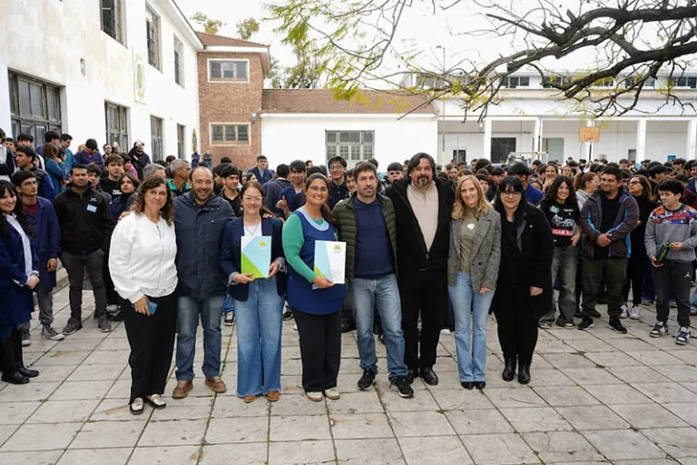

Educación técnica
Anuncian un fondo municipal para sostener los talleres de las Escuelas Técnicas
El intendente Juan Ustarroz anunció una importante inversión municipal destinada a sostener los talleres formativos y compensar la quita de recursos a nivel nacional. Es para las escuelas técnicas de la ciudad.